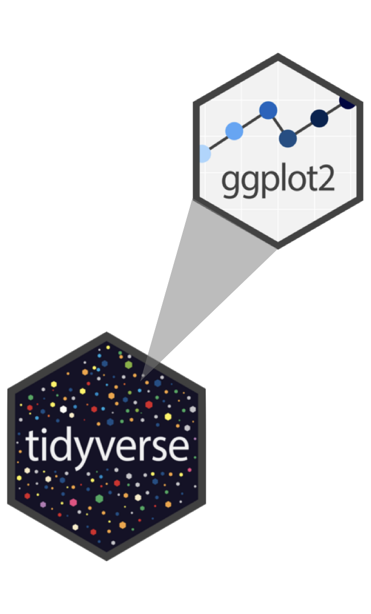
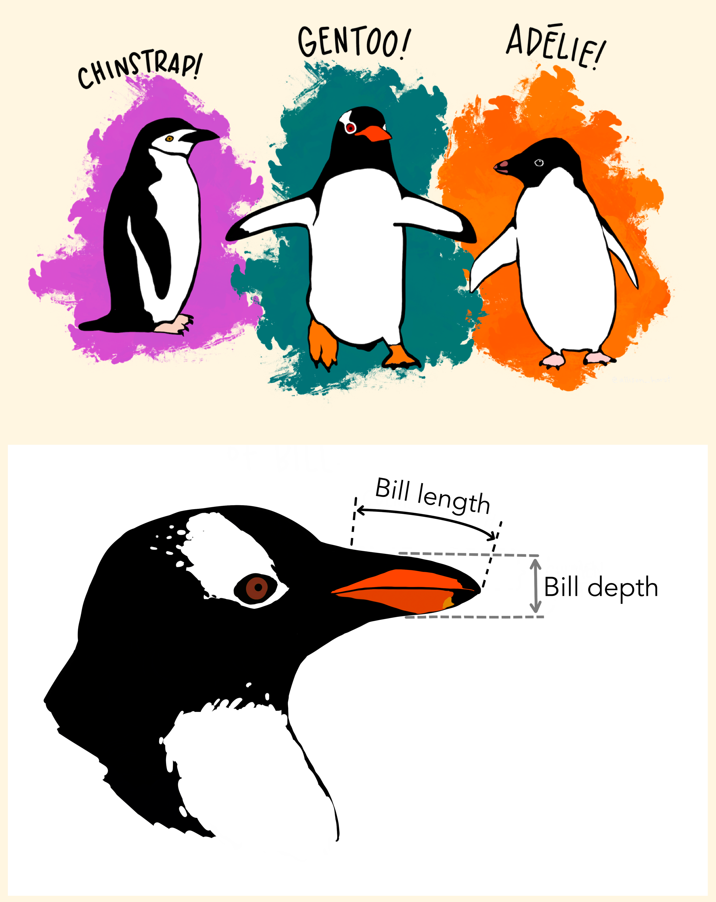
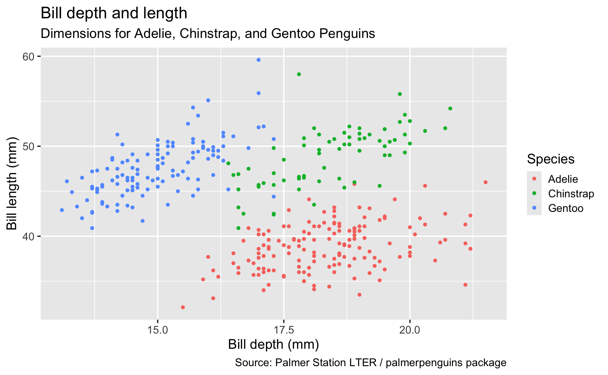
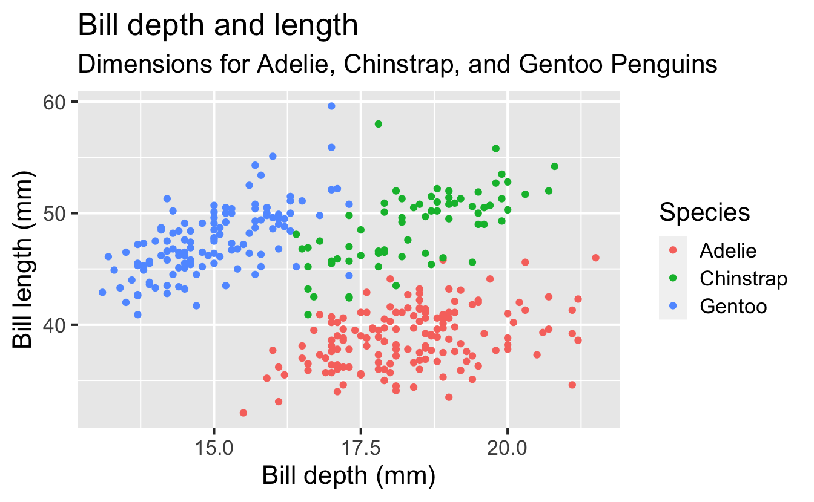
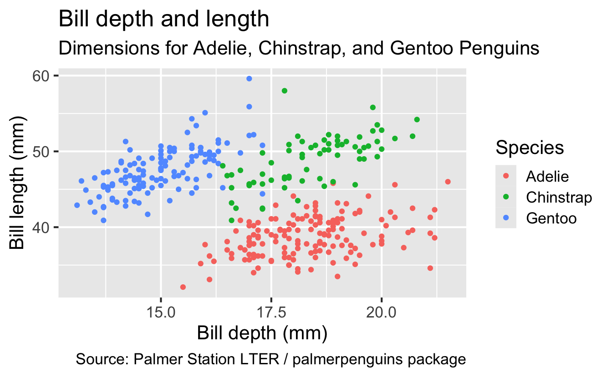
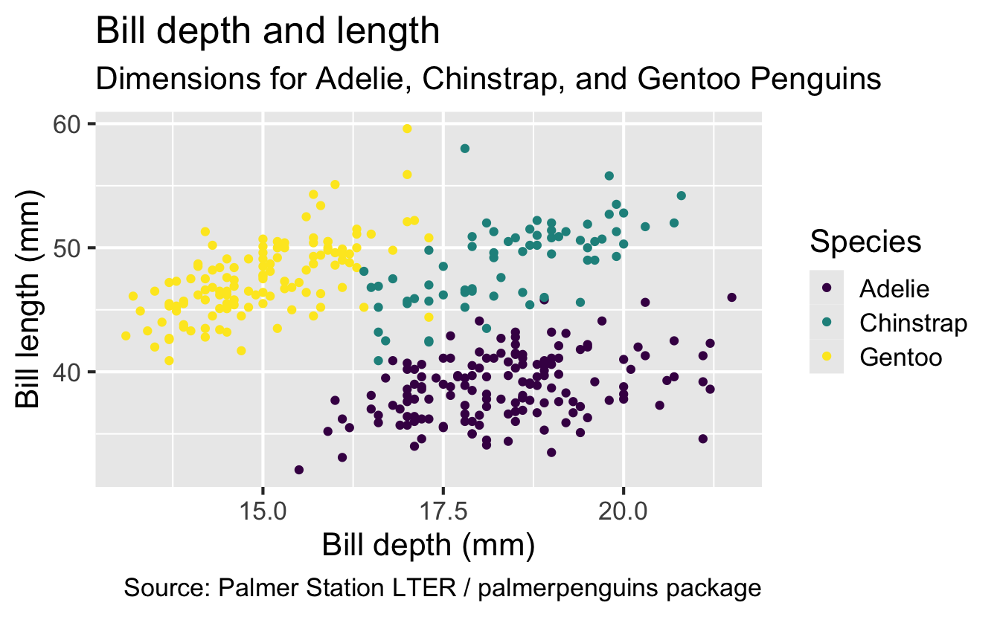
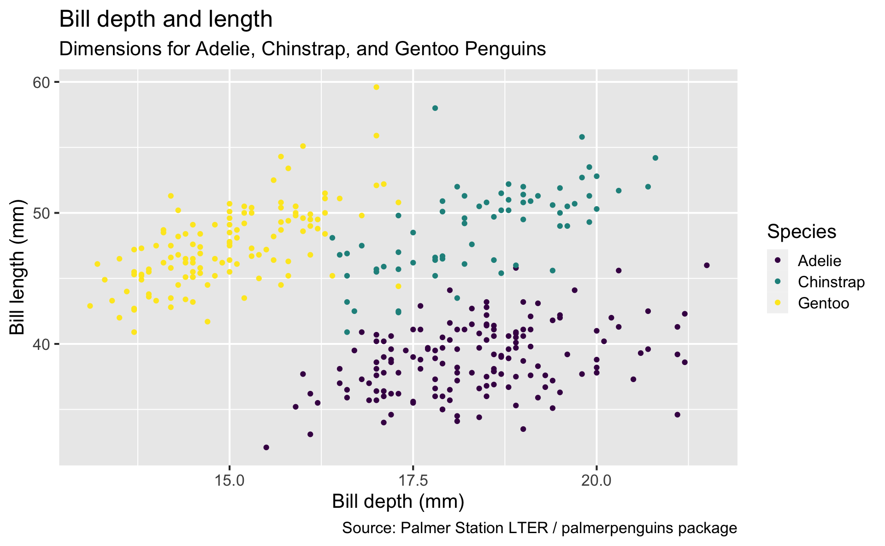

Data visualization and transformation
ggplot2 is tidyverse’s data visualization package
gg in ggplot2 stands for Grammar of Graphics, inspired by the book Grammar of Graphics by Leland Wilkinson

Package website: ggplot2.tidyverse.org
Structure of the code for plots can be summarized as
Measurements for penguin species, island in Palmer Archipelago, size (flipper length, body mass, bill dimensions), and sex.

Rows: 344
Columns: 8
$ species <fct> Adelie, Adelie, Adelie, Adelie, …
$ island <fct> Torgersen, Torgersen, Torgersen,…
$ bill_length_mm <dbl> 39.1, 39.5, 40.3, NA, 36.7, 39.3…
$ bill_depth_mm <dbl> 18.7, 17.4, 18.0, NA, 19.3, 20.6…
$ flipper_length_mm <int> 181, 186, 195, NA, 193, 190, 181…
$ body_mass_g <int> 3750, 3800, 3250, NA, 3450, 3650…
$ sex <fct> male, female, female, NA, female…
$ year <int> 2007, 2007, 2007, 2007, 2007, 20…
ggplot(
data = penguins,
mapping = aes(
x = bill_depth_mm, y = bill_length_mm,
color = species
)
) +
geom_point() +
labs(
title = "Bill depth and length",
subtitle = "Dimensions for Adelie, Chinstrap, and Gentoo Penguins",
x = "Bill depth (mm)",
y = "Bill length (mm)",
color = "Species",
caption = "Source: Palmer Station LTER / palmerpenguins package"
)Warning: Removed 2 rows containing missing values or values outside
the scale range (`geom_point()`).Start with the penguins data frame
Start with the penguins data frame, map bill depth to the x-axis
Start with the penguins data frame, map bill depth to the x-axis and map bill length to the y-axis.
Start with the penguins data frame, map bill depth to the x-axis and map bill length to the y-axis. Represent each observation with a point
Start with the penguins data frame, map bill depth to the x-axis and map bill length to the y-axis. Represent each observation with a point and map species to the color of each point.
Start with the penguins data frame, map bill depth to the x-axis and map bill length to the y-axis. Represent each observation with a point and map species to the color of each point. Title the plot “Bill depth and length”
Start with the penguins data frame, map bill depth to the x-axis and map bill length to the y-axis. Represent each observation with a point and map species to the color of each point. Title the plot “Bill depth and length”, add the subtitle “Dimensions for Adelie, Chinstrap, and Gentoo Penguins”
Start with the penguins data frame, map bill depth to the x-axis and map bill length to the y-axis. Represent each observation with a point and map species to the color of each point. Title the plot “Bill depth and length”, add the subtitle “Dimensions for Adelie, Chinstrap, and Gentoo Penguins”, label the x and y axes as “Bill depth (mm)” and “Bill length (mm)”, respectively
Start with the penguins data frame, map bill depth to the x-axis and map bill length to the y-axis. Represent each observation with a point and map species to the color of each point. Title the plot “Bill depth and length”, add the subtitle “Dimensions for Adelie, Chinstrap, and Gentoo Penguins”, label the x and y axes as “Bill depth (mm)” and “Bill length (mm)”, respectively, label the legend “Species”

Start with the penguins data frame, map bill depth to the x-axis and map bill length to the y-axis. Represent each observation with a point and map species to the color of each point. Title the plot “Bill depth and length”, add the subtitle “Dimensions for Adelie, Chinstrap, and Gentoo Penguins”, label the x and y axes as “Bill depth (mm)” and “Bill length (mm)”, respectively, label the legend “Species”, and add a caption for the data source.
ggplot(
data = penguins,
mapping = aes(x = bill_depth_mm, y = bill_length_mm, color = species)
) +
geom_point() +
labs(
title = "Bill depth and length",
subtitle = "Dimensions for Adelie, Chinstrap, and Gentoo Penguins",
x = "Bill depth (mm)", y = "Bill length (mm)",
color = "Species",
caption = "Source: Palmer Station LTER / palmerpenguins package"
)
Start with the penguins data frame, map bill depth to the x-axis and map bill length to the y-axis. Represent each observation with a point and map species to the color of each point. Title the plot “Bill depth and length”, add the subtitle “Dimensions for Adelie, Chinstrap, and Gentoo Penguins”, label the x and y axes as “Bill depth (mm)” and “Bill length (mm)”, respectively, label the legend “Species”, and add a caption for the data source. Finally, use a discrete color scale that is designed to be perceived by viewers with common forms of color blindness.
ggplot(
data = penguins,
mapping = aes(x = bill_depth_mm, y = bill_length_mm, color = species)
) +
geom_point() +
labs(
title = "Bill depth and length",
subtitle = "Dimensions for Adelie, Chinstrap, and Gentoo Penguins",
x = "Bill depth (mm)", y = "Bill length (mm)",
color = "Species",
caption = "Source: Palmer Station LTER / palmerpenguins package"
) +
scale_color_viridis_d()
Warning: Removed 2 rows containing missing values or values outside
the scale range (`geom_point()`).
ggplot(
data = penguins,
mapping = aes(x = bill_depth_mm, y = bill_length_mm, color = species)
) +
geom_point() +
labs(
title = "Bill depth and length",
subtitle = "Dimensions for Adelie, Chinstrap, and Gentoo Penguins",
x = "Bill depth (mm)", y = "Bill length (mm)",
color = "Species",
caption = "Source: Palmer Station LTER / palmerpenguins package"
) +
scale_color_viridis_d()Start with the penguins data frame, map bill depth to the x-axis and map bill length to the y-axis.
Represent each observation with a point and map species to the color of each point.
Title the plot “Bill depth and length”, add the subtitle “Dimensions for Adelie, Chinstrap, and Gentoo Penguins”, label the x and y axes as “Bill depth (mm)” and “Bill length (mm)”, respectively, label the legend “Species”, and add a caption for the data source.
Finally, use a discrete color scale that is designed to be perceived by viewers with common forms of color blindness.
You can omit the names of first two arguments when building plots with ggplot().